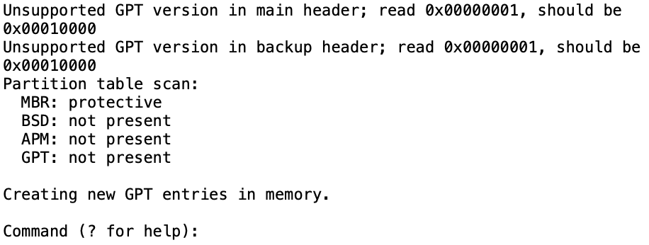
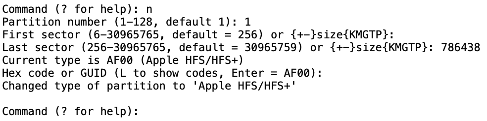
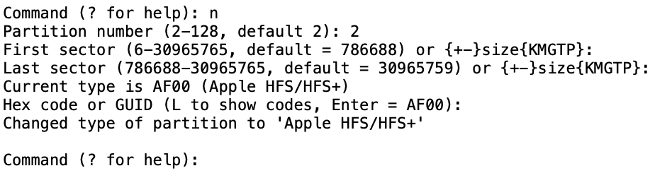
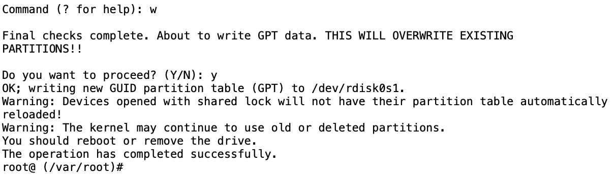
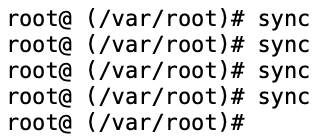
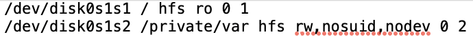

Installing filesystem
Create an iproxy tunnel using port 44 instead of 22
iproxy 2222 44
In a new terminal window, run the following command to connect to device:
ssh -l root -p 2222 127.0.0.1
Password is "alpine"
NOTE: If you have waited a long time and it still has not connected, press CTRL+C and try to connect again
Clear partitions and create new LwVM partition table
lwvm init
Reboot
reboot
You now need to boot ramdisk againNow we need to create new partitions
gptfdisk /dev/rdisk0s1
You should see this:
You can then press buttons in this order:
n <enter> 1 <enter> <enter> 786438 <enter> <enter>
If you pressed the buttons correctly, this is what you should see:
Now create the data partition
n <enter> 2 <enter> <enter> <enter> <enter>
Save changes
w <enter> y <enter>
Now execute sync a few times
sync
IMPORTANT: If for some reason newfs_hfs can't find the new partitions, you may need to reboot and boot ramdisk again
Format partitions
/sbin/newfs_hfs -s -v System -J -b 4096 -n a=4096,c=4096,e=4096 /dev/disk0s1s1
/sbin/newfs_hfs -s -v Data -J -b 4096 -n a=4096,c=4096,e=4096 /dev/disk0s1s2
Mount partitions
mount_hfs /dev/disk0s1s1 /mnt1
mount_hfs /dev/disk0s1s2 /mnt2
Send filesystem tar to device
scp -P 2222 ios7.tar root@localhost:/mnt2
Extract filesystem
tar -xvf /mnt2/ios7.tar -C /mnt1
Move /var to disk0s1s2
mv -v /mnt1/private/var/* /mnt2
Create folders needed for booting
mkdir -p /mnt1/usr/local/standalone/firmware
Add files required for booting
scp -r -P 2222 ./keybags root@localhost:/mnt2
scp -r -P 2222 ./Baseband root@localhost:/mnt1/usr/local/standalone/firmware
scp -P 2222 ./apticket.der root@localhost:/mnt1/System/Library/Caches/
scp -P 2222 ./sep-firmware.img4 root@localhost:/mnt1/usr/standalone/firmware/
Since nano is unavailable on the ramdisk, you must copy fstab to your computer and edit it there before transferring it back
scp -P 2222 root@localhost:/mnt1/etc/fstab ./fstab
Open fstab in your preferred text editor and change it so it looks like this:
Save this file and transfer it back to your device
scp -P 2222 fstab root@localhost:/mnt1/etc/
Now you can reboot!
reboot